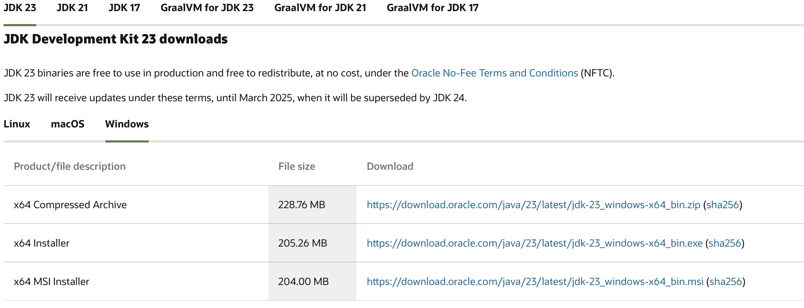

第1周：课程导论与开发环境
一、教学目标
- 了解课程整体安排和学习目标
- 掌握Java开发环境的搭建（JDK、Cursor IDE）
- 理解代码规范与编码风格的重要性
- 认识AI辅助编程工具（CodeGeeX和DeepCode），提升学习效率
- 通过实践操作，搭建开发环境，掌握基本工具的使用
二、课程内容
1. 课程介绍与学习方法指导
1.1 课程概述
- 课程目标：培养学生掌握Java编程的基础知识和网络应用开发技能，结合AI辅助编程工具（CodeGeeX和DeepCode），提高编码效率和代码质量。
- 课程结构：共16周，涵盖Java基础、数据结构与算法、数据库、网络编程、前后端开发、Spring Boot框架等。
- 评估方式：平时成绩（出勤、课堂参与、作业）、项目成绩（团队项目完成度）。
1.2 学习方法与资源
- 主动学习：鼓励学生积极参与课堂讨论和实践项目。
- 团队合作：通过团队项目，培养协作能力和项目管理能力。
- 利用资源：善用教材、在线教程和AI辅助工具，提高学习效率。
2. Java开发环境配置（JDK、Cursor IDE）
2.1 JDK的安装与配置
什么是JDK：Java Development Kit，Java开发工具包，包含编译器、运行时环境等。
安装步骤：
下载JDK：
- 访问Oracle官网下载最新版本的JDK（如JDK 23, JDK 21, JDK 17）。

图1：下载JDK页面截图安装JDK：
- 根据操作系统（Windows、macOS、Linux）安装下载的JDK。
配置环境变量 (一般不需要)：
- Windows：
- 右键“此电脑” -> “属性” -> “高级系统设置” -> “环境变量”。
- 新建系统变量
JAVA_HOME，值为JDK的安装路径（如C:\Program Files\Java\jdk-23）。 - 编辑
Path变量，添加%JAVA_HOME%\bin。
- macOS/Linux：
编辑
~/.bash_profile或~/.bashrc文件，添加：export JAVA_HOME=/path/to/jdk export PATH=$JAVA_HOME/bin:$PATH运行
source ~/.bash_profile或source ~/.bashrc使配置生效。
- Windows：
验证安装：
java -version- 确认Java版本信息是否正确显示。
2.2 集成开发环境（IDE）选择与安装
推荐使用Cursor IDE：
- Cursor IDE简介：Cursor是一款基于VS Code开发的AI编辑器，集成了国内开源的AI模型CodeGeeX和DeepCode，提供智能代码补全、自动生成代码模板、错误检测与修复建议等功能。
- 优势：
- 智能辅助：利用CodeGeeX和DeepCode，提升代码编写效率和质量。
- 兼容性强：基于VS Code，支持丰富的插件和扩展。
- 用户友好：简洁的界面和强大的功能，适合初学者和专业开发者。
安装步骤：
- 下载Cursor IDE：
- 访问Cursor官网下载适合操作系统的安装包。

- 安装Cursor IDE：
- 根据操作系统安装下载的Cursor IDE。
- 初步配置：
- 安装必要的插件：
- Chinese (Simplified) (简体中文) Language Pack for Visual Studio Code
- Extension Pack for Java
- CodeGeeX
- 下载Cursor IDE：
3. 代码规范与编码风格
3.1 代码规范的重要性
- 可读性：统一的编码风格提高代码的可读性和可维护性。
- 协作性：团队开发中，遵循共同的规范，减少沟通成本。
- 质量保障：良好的代码规范有助于发现潜在的问题，提升代码质量。
3.2 常用的Java编码规范
- 命名规范：
- 类名：大驼峰（PascalCase），如
UserService - 方法名、变量名：小驼峰（camelCase），如
getUserName - 常量名：全大写，使用下划线分隔，如
MAX_SIZE
- 类名：大驼峰（PascalCase），如
- 缩进与空格：
- 使用4个空格进行缩进
- 运算符两边留空格，如
int a = b + c;
- 代码结构：
- 类、方法、变量的顺序
- 合理使用注释，保持代码简洁
4. AI辅助编程工具的介绍与安装
4.1 AI辅助编程的概念
- 定义：利用人工智能技术，辅助代码生成、调试和优化，提升开发效率。
- 优势：
- 快速生成代码：根据需求描述或部分代码，自动生成完整的代码结构。
- 提供代码建议：智能提示，减少语法错误和逻辑错误。
- 辅助调试：自动检测代码中的潜在问题，提供修复建议。
4.2 AI辅助编程工具（CodeGeeX和DeepCode）的介绍
- CodeGeeX：
- 功能：
- 智能代码补全：根据上下文自动补全代码。
- 代码生成：根据描述生成类、方法、接口等代码模板。
- 代码优化建议：提供性能优化和代码改进建议。
- 功能：
- DeepCode：
- 功能：
- 代码搜索：在项目中快速查找特定代码片段或功能实现。
- 错误检测与修复：自动检测代码中的潜在错误，并提供修复方案。
- 文档生成：根据代码自动生成文档，提高代码可维护性。
- 功能：
三、实践环节
1. 搭建开发环境，熟悉Cursor IDE
- 步骤：
- 安装JDK：
- 下载并安装JDK。
- 配置环境变量，验证安装。
- 安装Cursor IDE：
- 下载并安装Cursor IDE。
- 初步配置主题和插件（CodeGeeX和DeepCode）。
- 创建并运行第一个Java项目：
在Cursor IDE中创建一个新项目。
编写并运行以下示例程序：
public class HelloWorld { public static void main(String[] args) { System.out.println("Hello, Java!"); } }运行程序，确保输出“Hello, Java!”。
- 安装JDK：
- 目标：确保开发环境正常运行，熟悉Cursor IDE的基本操作，包括代码编写、运行和调试。
3. 体验AI辅助编程工具（CodeGeeX和DeepCode），提高代码编写效率
- 利用DeepSeek或CodeGeeX生成的代码模板，完善功能，如创建、读取用户信息。public class User {
private Long id;
private String name;
private String email;
// Getter和Setter方法由CodeGeeX生成
@Override
public String toString() {
return "User{id=" + id + ", name='" + name + "', email='" + email + "'}";
}
}- 观察AI工具的建议：
- 在编写代码过程中，查看CodeGeeX和DeepCode提供的代码补全和优化建议。
- 目标：熟悉CodeGeeX和DeepCode的使用，提高代码编写效率，减少手动编写重复性代码，提升代码质量。
四、综合练习
开发一个简单的个人信息管理系统（综合应用环境搭建、Git管理和AI辅助编程）
任务描述：
编写一个基于命令行的个人信息管理系统，支持以下功能：
- 添加个人信息：
- 用户可以输入姓名、年龄、邮箱等信息，并保存到系统中。
- 查看个人信息：
- 显示所有已添加的个人信息。
- 删除个人信息：
- 根据姓名或邮箱，删除指定的个人信息。
- 更新个人信息：
- 根据姓名或邮箱，更新指定的个人信息。
- 保存与加载数据：
- 将个人信息保存到文件中，程序启动时加载已有数据。
技术要点：
- 面向对象设计：
- 定义
Person类，包含name、age、email等属性。
- 定义
- 数据存储：
- 使用
ArrayList<Person>存储个人信息。 - 使用文件I/O（如
ObjectOutputStream和ObjectInputStream）进行数据的保存和加载。
- 使用
- 用户交互：
- 使用
Scanner类读取用户输入。 - 提供菜单选项，响应用户的选择。
- 使用
- 异常处理：
- 处理用户输入错误、文件读写异常等。
- 版本控制：
- 使用Git管理项目代码，记录开发过程中的重要节点。
- AI辅助编程：
- 利用AI生成
Person类和数据管理类的基本代码模板。 - 优化代码结构和性能。
- 利用AI生成
要求：
- 功能实现：所有功能均能正常工作，用户能够添加、查看、删除和更新个人信息，数据能够保存和加载。
- 代码规范：遵循Java编码规范，变量命名清晰，代码注释合理。
- 异常处理：程序能够处理用户输入错误和文件I/O异常，避免程序崩溃。
- 使用AI辅助工具：利用CodeGeeX和DeepCode生成部分代码模板，提高开发效率。
实施步骤：
- 设计数据结构：
- 利用CodeGeeX生成
Person类和PersonalInfoManager类的基本代码结构。
- 利用CodeGeeX生成
- 实现功能：
- 根据生成的模板，完善添加、查看、删除和更新功能。
- 版本控制：
- 使用Git进行代码管理，记录每一步的开发进度。
- 优化代码：
- 使用DeepCode分析代码，接受优化建议，提高代码质量。
- 测试程序：
- 通过不同的输入测试所有功能，确保程序稳定运行。
示例代码（部分）：
import java.io.*;
import java.util.ArrayList;
import java.util.List;
import java.util.Scanner;
// 定义Person类
class Person implements Serializable {
private String name;
private int age;
private String email;
// 构造方法
public Person(String name, int age, String email) {
this.name = name;
this.age = age;
this.email = email;
}
// Getter和Setter方法
public String getName() {
return name;
}
public void setName(String name) {
this.name = name;
}
public int getAge() {
return age;
}
public void setAge(int age) {
if(age >=0 && age <= 150){
this.age = age;
} else {
System.out.println("请输入有效的年龄（0-150）。");
}
}
public String getEmail() {
return email;
}
public void setEmail(String email) {
// 简单的邮箱格式验证
if(email.contains("@") && email.contains(".")){
this.email = email;
} else {
System.out.println("请输入有效的邮箱地址。");
}
}
@Override
public String toString() {
return "姓名：" + name + ", 年龄：" + age + ", 邮箱：" + email;
}
}
// 个人信息管理系统
public class PersonalInfoManager {
private List<Person> personList;
private final String DATA_FILE = "persons.dat";
public PersonalInfoManager() {
personList = loadData();
}
// 添加个人信息
public void addPerson(Person person) {
personList.add(person);
saveData();
}
// 查看所有个人信息
public void viewPersons() {
if (personList.isEmpty()) {
System.out.println("暂无个人信息。");
} else {
for (Person p : personList) {
System.out.println(p);
}
}
}
// 删除个人信息
public void deletePerson(String identifier) {
boolean removed = personList.removeIf(p -> p.getName().equalsIgnoreCase(identifier) || p.getEmail().equalsIgnoreCase(identifier));
if (removed) {
System.out.println("删除成功。");
} else {
System.out.println("未找到匹配的个人信息。");
}
saveData();
}
// 更新个人信息
public void updatePerson(String identifier, Person updatedPerson) {
boolean found = false;
for (int i = 0; i < personList.size(); i++) {
Person p = personList.get(i);
if (p.getName().equalsIgnoreCase(identifier) || p.getEmail().equalsIgnoreCase(identifier)) {
personList.set(i, updatedPerson);
found = true;
System.out.println("更新成功。");
break;
}
}
if (!found) {
System.out.println("未找到匹配的个人信息。");
}
saveData();
}
// 保存数据到文件
private void saveData() {
try (ObjectOutputStream oos = new ObjectOutputStream(new FileOutputStream(DATA_FILE))) {
oos.writeObject(personList);
} catch (IOException e) {
System.out.println("保存数据失败：" + e.getMessage());
}
}
// 从文件加载数据
private List<Person> loadData() {
File file = new File(DATA_FILE);
if (!file.exists()) {
return new ArrayList<>();
}
try (ObjectInputStream ois = new ObjectInputStream(new FileInputStream(file))) {
return (List<Person>) ois.readObject();
} catch (IOException | ClassNotFoundException e) {
System.out.println("加载数据失败：" + e.getMessage());
return new ArrayList<>();
}
}
// 主程序
public static void main(String[] args) {
PersonalInfoManager manager = new PersonalInfoManager();
Scanner scanner = new Scanner(System.in);
String choice;
while (true) {
System.out.println("\n个人信息管理系统");
System.out.println("1. 添加个人信息");
System.out.println("2. 查看所有个人信息");
System.out.println("3. 删除个人信息");
System.out.println("4. 更新个人信息");
System.out.println("5. 退出");
System.out.print("请选择操作：");
choice = scanner.nextLine();
switch (choice) {
case "1":
System.out.print("请输入姓名：");
String name = scanner.nextLine();
System.out.print("请输入年龄：");
int age;
try {
age = Integer.parseInt(scanner.nextLine());
} catch (NumberFormatException e) {
System.out.println("年龄输入有误。");
break;
}
System.out.print("请输入邮箱：");
String email = scanner.nextLine();
Person person = new Person(name, age, email);
manager.addPerson(person);
System.out.println("添加成功。");
break;
case "2":
manager.viewPersons();
break;
case "3":
System.out.print("请输入要删除的姓名或邮箱：");
String identifier = scanner.nextLine();
manager.deletePerson(identifier);
break;
case "4":
System.out.print("请输入要更新的姓名或邮箱：");
String id = scanner.nextLine();
System.out.print("请输入新的姓名：");
String newName = scanner.nextLine();
System.out.print("请输入新的年龄：");
int newAge;
try {
newAge = Integer.parseInt(scanner.nextLine());
} catch (NumberFormatException e) {
System.out.println("年龄输入有误。");
break;
}
System.out.print("请输入新的邮箱：");
String newEmail = scanner.nextLine();
Person updatedPerson = new Person(newName, newAge, newEmail);
manager.updatePerson(id, updatedPerson);
break;
case "5":
System.out.println("退出系统。");
System.exit(0);
default:
System.out.println("无效的选择，请重新输入。");
}
}
}
}要求：
- 功能实现：所有功能按要求实现，用户能够添加、查看、删除和更新个人信息，数据能够保存和加载。
- 代码规范：遵循Java编码规范，变量命名清晰，代码注释合理。
- 异常处理：程序能够处理用户输入错误和文件I/O异常，避免程序崩溃。
- 使用AI辅助工具：利用CodeGeeX生成
Person类和管理类的基本代码模板，使用DeepCode优化代码结构和性能。
实施步骤：
- 设计数据结构：
- 利用CodeGeeX生成
Person类和PersonalInfoManager类的基本代码结构。
- 利用CodeGeeX生成
- 实现功能：
- 根据生成的模板，完善添加、查看、删除和更新功能。
- 优化代码：
- 使用DeepCode分析代码，接受优化建议，提高代码质量。
- 测试程序：
- 通过不同的输入测试所有功能，确保程序稳定运行。
使用AI工具的优势：
- 加速开发：CodeGeeX快速生成类和方法的模板，减少手动编写重复性代码。
- 提高代码质量：DeepCode提供优化建议，帮助发现并修复潜在问题。
- 学习效率：通过AI辅助工具，学生能够更专注于业务逻辑和功能实现，提升学习效果。
五、课堂讨论
- 代码规范的优势：统一的代码风格如何提升团队协作和代码质量？
- AI辅助编程的应用：CodeGeeX和DeepCode在实际开发中有哪些应用场景？如何有效利用这些AI工具提高开发效率？
- 开发环境的选择：为什么选择Cursor IDE？Cursor IDE相比其他IDE有哪些独特的优势？
六、学习建议
- 主动实践：完成课后的练习和综合练习，熟悉开发环境和工具的使用。
- 善于总结：每天学习后，回顾和总结所学知识，巩固理解。
- 遵循规范：养成良好的编码习惯，遵循代码规范，编写可读性高的代码。
- 利用资源：善用教材、在线教程和AI辅助工具（CodeGeeX和DeepCode），提升学习效率。
- 团队协作：在团队项目中，积极参与，学会与他人合作，共同解决问题。
七、预习与准备
- 预习下周内容：Java基础语法与面向对象编程
- 思考问题：
- 什么是面向对象编程？它有哪些核心特性？
备注：本周内容重点在于了解课程整体安排，掌握Java开发环境的搭建和基本工具的使用。通过实践环节，确保学生能够顺利开始Java编程学习，为后续的课程内容打下坚实的基础。特别是通过使用Cursor IDE和AI辅助工具CodeGeeX与DeepCode，学生将体验到现代开发工具带来的高效和便捷，提升编程学习的兴趣和效果。